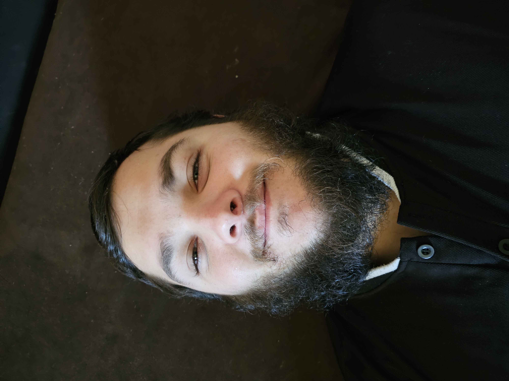
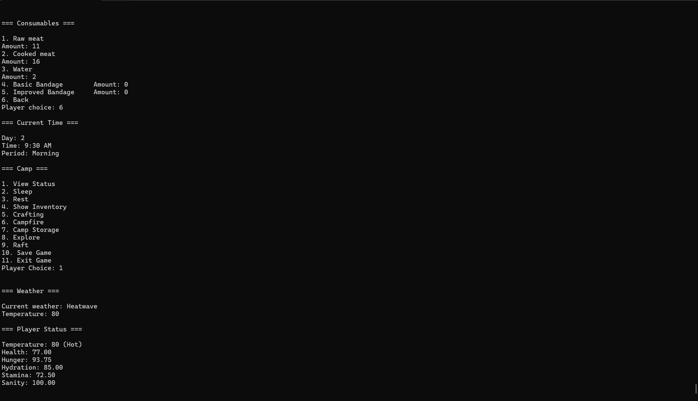

Languages
C++, HTML, CSS
Student Developer Portfolio
I am a Game Development student at Full Sail University with a focus on C++ programming and creating interactive gameplay systems. I enjoy building games, solving technical problems, and improving how different systems work together. My goal is to continue developing my skills and pursue a professional career in game development, whether that means working at one of my favorite companies or eventually creating one of my own.

About Me
I am a Game Development student at Full Sail University who enjoys learning how games work behind the scenes. My interest in programming grew from playing games and wanting to understand how developers create the systems that make them interactive. Through my coursework, I have gained experience with C++, object-oriented programming, debugging, input validation, file handling, and building larger systems across multiple classes. I especially enjoy solving problems that involve connecting different gameplay systems while keeping the code organized and maintainable.
C++, HTML, CSS
Visual Studio, Git, GitHub
Object-oriented programming, gameplay systems, debugging, and clean code
Featured Work
This project demonstrates my growth in C++ programming, game development, problem-solving, and software design.

C++ Console Survival Game
The Long Lost Isle is my first attempt at a text-based survival game developed in C++. The player explores an island, gathers resources, manages survival needs, crafts equipment, hunts wildlife, and works toward building a raft to escape.
C++, Visual Studio, Git, GitHub, and Github Projects
One of the biggest challenges was connecting multiple gameplay systems without making the Game class responsible for everything. As the project grew, systems such as inventory, crafting, locations, camp storage, time progression, and survival mechanics became more difficult to manage together. I improved the design by separating these responsibilities into dedicated classes and testing each change as the systems were integrated.
This project helped me improve my understanding of object-oriented design, debugging interconnected systems, and organizing a larger C++ project. I also became more confident breaking larger problems into smaller systems and testing changes incrementally.
Contact
Feel free to connect with me through my professional profiles or contact me by email.